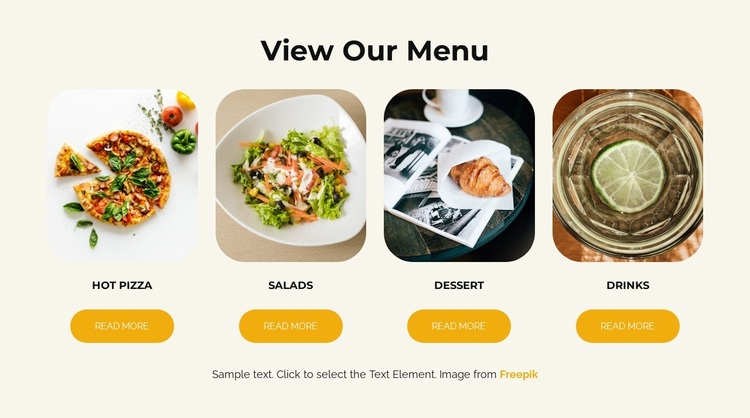

Website
Category: Fundamental Web Concepts
Definition
A Website is a group of related and logically connected web pages that are typically identified with a common domain name and published on at least one web server.
Visual Comparison

Figure 1: Example of a typical website layout.
Examples & Use Cases
The difference between a simple website and a web application, consider these examples:
- Informational Websites: A local restaurant's page that only shows a menu and opening hours, or a personal blog that simply displays text.
- Travel Research: A destination guide that provides information about places to visit, but does not allow users to book hotels or flights directly.
Key Differences
The main distinction between a website and a web application is the nature of the content:
- Static Content: A website primarily delivers content mostly from static files. The information remains the same for every visitor.
- Informational Focus: Traditional websites are designed to be read or viewed rather than interacted with for complex tasks.
The Evolution
In the modern era, websites must often support web applications to remain competitive and meet user expectations for interactivity.